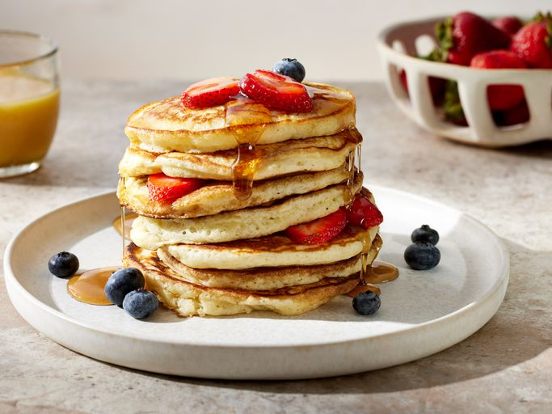

Fluffy Pancakes

Description
Light, airy, and stacked high, these fluffy pancakes are topped with fresh strawberries, blueberries, and a generous drizzle of maple syrup—perfect for a cozy, delicious breakfast.
Ingredients
- 1 cup all-purpose flour
- 2 tablespoons granulated sugar
- 1 tablespoon baking powder
- 1/2 teaspoon salt
- 1 cup milk
- 1 large egg
- 2 tablespoons melted butter
- 1 teaspoon vanilla extract
- Butter or oil for cooking
- Maple syrup and fresh fruit for serving
Directions
- In a large bowl, whisk together the flour, sugar, baking powder, and salt.
- In another bowl, mix the milk, egg, melted butter, and vanilla extract until well combined.
- Pour the wet ingredients into the dry ingredients and stir gently until just combined. Do not overmix; a few lumps are okay.
- Heat a non-stick skillet or griddle over medium heat and lightly grease with butter or oil.
- Pour about 1/4 cup of batter onto the skillet for each pancake. Cook until bubbles form on the surface and the edges look set, about 2-3 minutes.
- Flip the pancakes and cook for another 1-2 minutes until golden brown.
- Repeat with remaining batter, adjusting heat as necessary to prevent burning.
- Serve warm with maple syrup and fresh fruit on top.
Back to Home